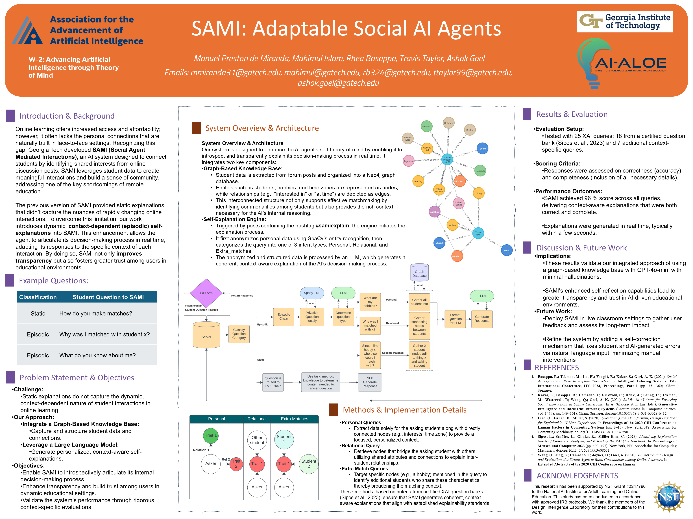

SAMI: Social AI Agent
SAMI is an AI social agent developed at AI-Aloe DI Lab. Designed for online learning environments, SAMI not only connects students based on shared interests but also provides real-time, context-aware explanations of its decisions.
Project Overview & Technical Insights
SAMI—short for Social Agent Mediated Interactions—utilizes a graph-based knowledge database (Neo4j) to store and retrieve student data extracted from discussion forums. An LLM (GPT-4o-mini) drives its dynamic self-explanation capabilities. When a learner submits a query using a tag like #samiexplain, the system distinguishes between static and episodic questions. For episodic queries, SAMI anonymizes sensitive information using SpaCy and generates detailed, context-aware responses in real time via a Flask-powered server.
This blend of real-time matchmaking and explainable AI (XAI) not only enhances transparency in AI decisions but also fosters greater trust in digital learning environments.
The above poster was used in my AAAI conference presentation, where I showcased the research behind SAMI, including its episodic self-explanation capabilities.
Download Extended Abstract